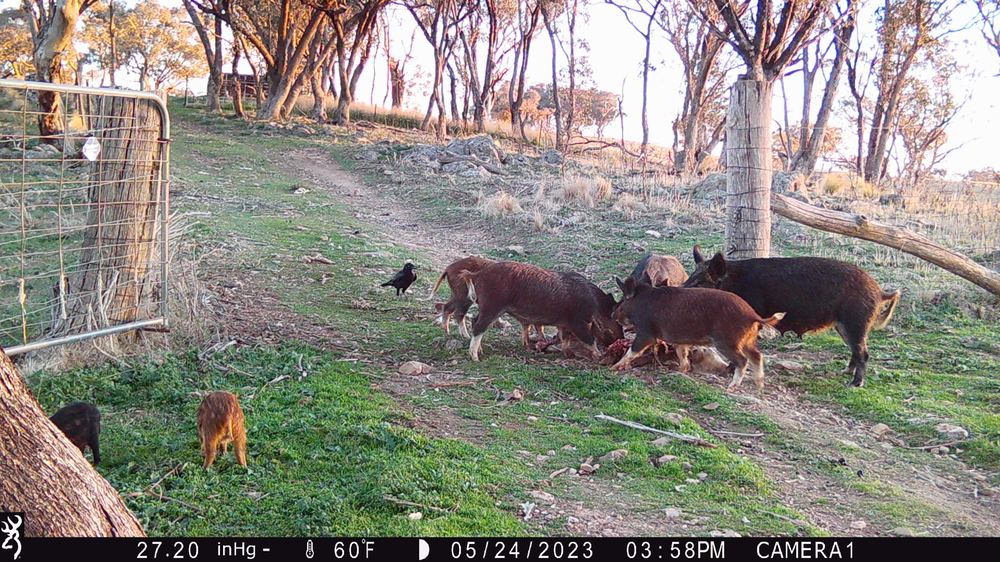
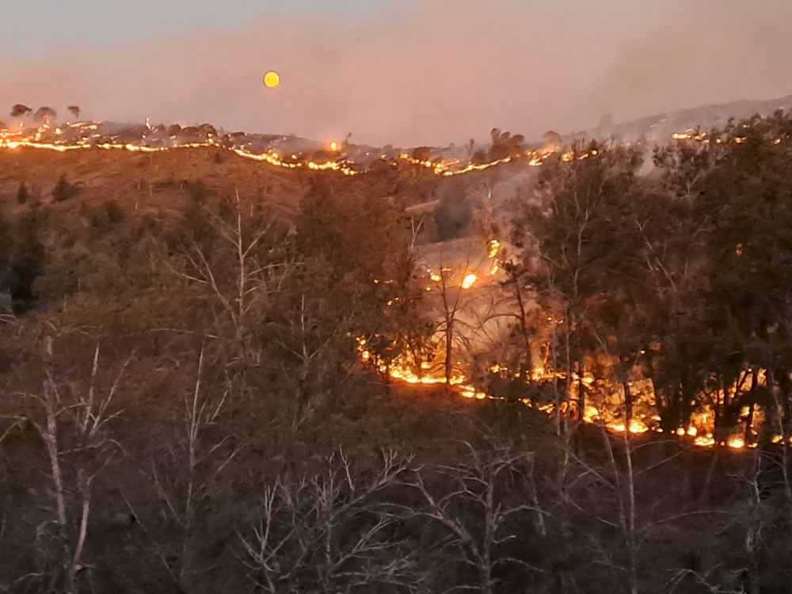
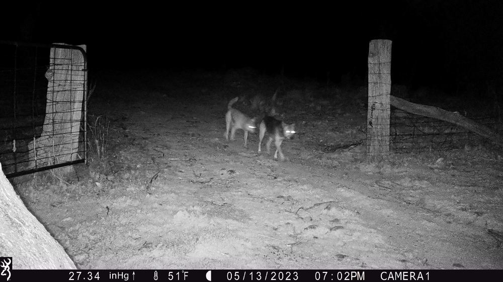
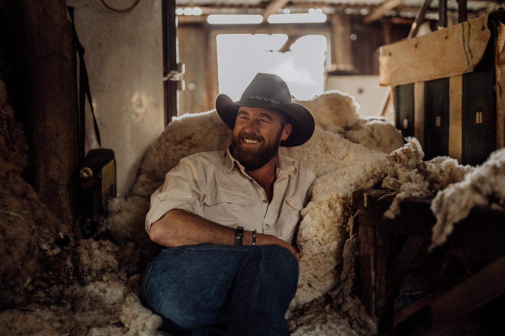

01

Vertebrate Pest Management
Integrated Pest Management (IPM) across the lot — rabbits, foxes, pigs, wild dogs, deer and goats.
- Remote-controlled cellular drop gates
- Feral pig control & trapping
- Coordinated IPM programs
Rural Asset Protection Solutions helps landholders across the Central West manage feral pests, get bushfire-ready and secure their property — one job or the lot, whatever your place needs.
Pest, fire and security are three separate jobs — take one, or combine them. Whatever your place needs, we keep it simple and straightforward.

Integrated Pest Management (IPM) across the lot — rabbits, foxes, pigs, wild dogs, deer and goats.

Practical bushfire preparation that gives you the best chance when it counts.

Cut down rural crime with the right set-up and a connected community.
One of the most proven, effective methods for managing feral pigs — and it works just as well on goats and deer. Watch and trigger the gate remotely from your phone, taking whole mobs in one go.
From a single fox trap for the chooks to large, complex contracts. No job's too small or too big — including fencing, stock transport and other rural jobs. Just ask.
On jobs with many stakeholders — townships, tourism areas, public land — protecting the community's goodwill and every stakeholder's reputation comes first. The work is done quietly, cleanly and without fuss.
Pest control is serious work, and there's a right and respectful way to do it: humane methods, quick and clean, with animals treated with respect and sites left tidy.
Operations are planned around natural habitats and restoration areas, so protecting your assets never comes at the cost of the country itself.
We know first-hand how much damage pests, fire and rural crime can do — because we've farmed through it.
With six generations of family farming behind us, we understand livestock loss, theft and trespass. Our team has a proud volunteer firefighting background and works alongside Landcare agencies — and brings that mix of pest control, fire mitigation and asset security to every property, from a neighbour's block to a government reserve.
More about RAPS →
Free, obligation-free on-property consultation across the Central West.
Book a free consult Call 0422 592 095